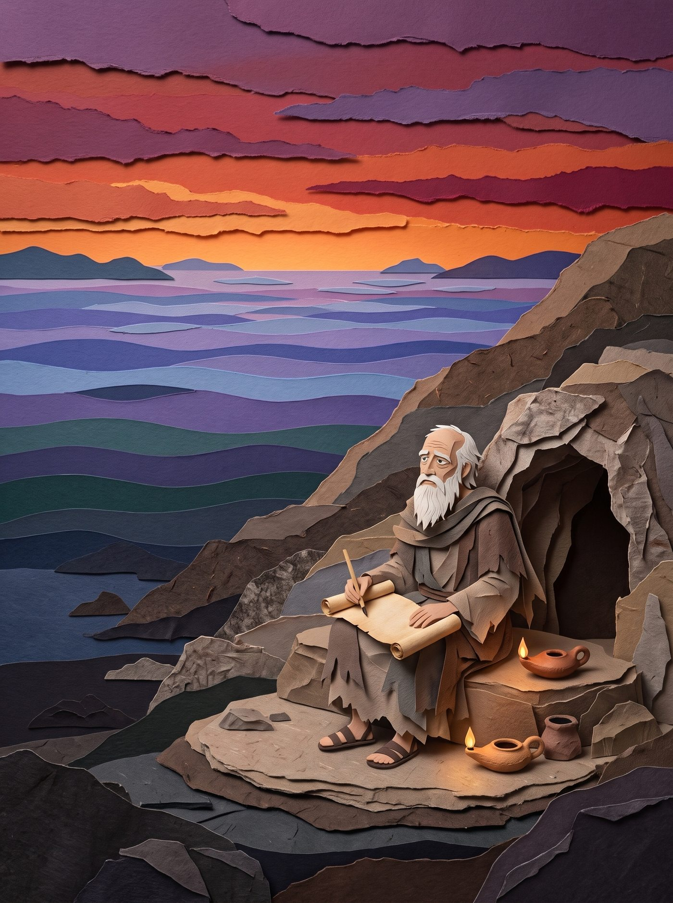
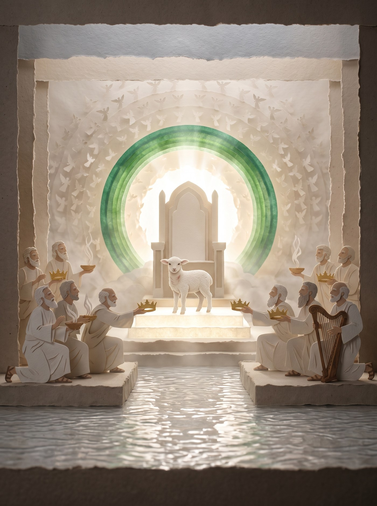
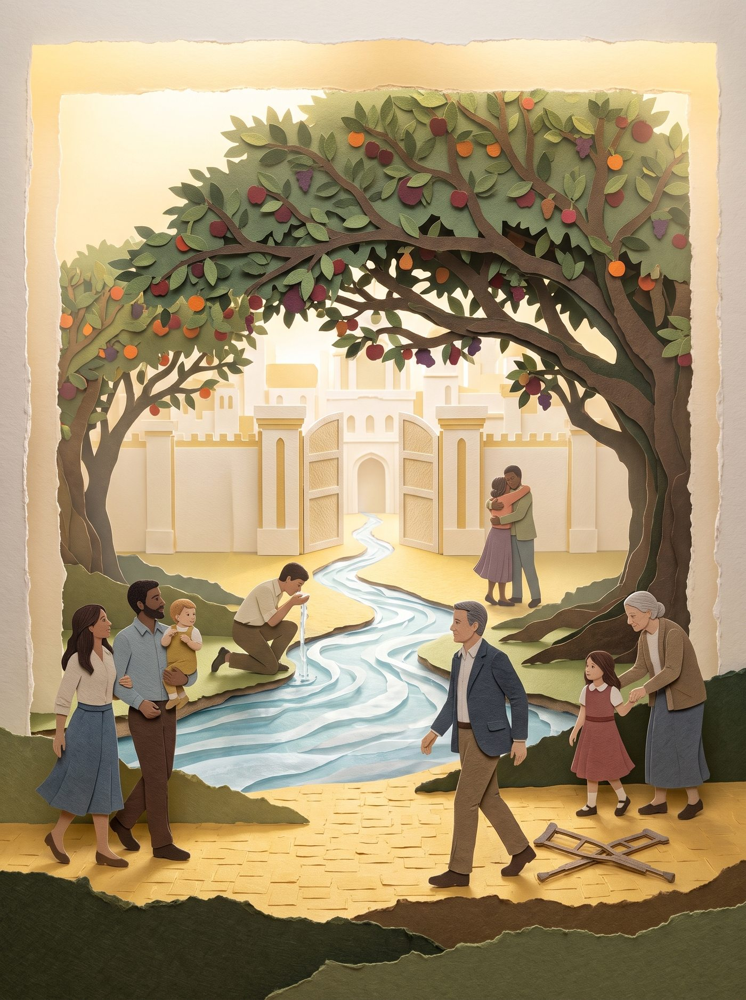

Capítulo 13
El Cordero en el trono
Parte II: el cumplimiento · 2 Corintios 5; Juan 14; Apocalipsis 1, 5, 21–22
La escena
Recreación: así pudo haber sido. Los hechos están en el libro del Apocalipsis y en las cartas. Lo que pensaban y sentían se imagina a partir del texto y de lo que se sabe de la época.
Una isla en el mar
Han pasado unos sesenta años desde aquella mañana de la tumba vacía.
En una isla pequeña y seca del mar Egeo, frente a la costa de lo que hoy es Turquía, un anciano mira el mar. La isla se llama Patmos. Tiene cerros pelados, piedras, unos pocos pescadores, y el viento que no para. Los romanos mandaban ahí a algunos desterrados, a los que querían tener lejos.
El anciano se llama Juan.
Es el mismo Juan que de muchacho remendaba redes con su hermano Jacobo en el mar de Galilea. El que estuvo en la barca durante la tormenta. El que se recostó junto a Jesús en la última cena. El único de los doce que estuvo al pie de la cruz. El que corrió con Pedro hasta la tumba vacía. El que estaba en la barca la mañana en que Pedro se tiró al agua.
Y ahora está solo.
Todos los demás han muerto. Su hermano Jacobo fue el primero de los doce en morir, a espada, en Jerusalén. Pedro murió en Roma, crucificado, según la tradición. Pablo, decapitado. Jerusalén fue destruida por los romanos, y del templo de Moriah no quedó piedra sobre piedra. Y ahora el emperador Domiciano exige que lo adoren como a un dios, y a los cristianos que no lo hacen los persiguen, les quitan sus bienes, los matan.
Juan mismo lo dice así:
«Yo Juan, vuestro hermano, y copartícipe vuestro en la tribulación, en el reino y en la paciencia de Jesucristo, estaba en la isla llamada Patmos, por causa de la palabra de Dios y el testimonio de Jesucristo» (Ap 1:9).
Tribulación y paciencia. Son tiempos difíciles. Y es fácil imaginarse lo que se preguntaban las iglesias pequeñas que Juan había cuidado, en Éfeso, en Esmirna, en Pérgamo: ¿dónde está Dios? ¿No dijo Jesús que iba a volver? ¿Ganó Roma? ¿Ganó la muerte?
Es la pregunta de Habacuc. La del capítulo 7. ¿Hasta cuándo, Señor?
La voz
Un domingo, el día del Señor, Juan está orando. Y oye detrás de él una voz fuerte, como una trompeta. Se da vuelta. Y ve a Jesús. Pero no como lo conocía en Galilea, cansado y polvoriento junto a un pozo. Lo ve con toda su gloria, con el rostro brillando como el sol.
Y Juan, el que se recostaba junto a Él en la cena, cae al suelo como muerto.
Y entonces siente una mano sobre él.
«Y él puso su diestra sobre mí, diciéndome: No temas; yo soy el primero y el último; y el que vivo, y estuve muerto; mas he aquí que vivo por los siglos de los siglos, amén. Y tengo las llaves de la muerte y del Hades» (Ap 1:17-18).
No temas. Lo mismo que les dijo en la barca, en la tormenta. Yo soy. Estuve muerto. Y vivo. Y tengo las llaves de la muerte.
Roma tenía las llaves de las cárceles. Jesús tiene las llaves de la muerte.

Un libro que nadie puede abrir
Y Juan ve una puerta abierta en el cielo. Y ve un trono, y Uno sentado en el trono, y alrededor del trono una luz como de arcoíris. Y en la mano derecha del que está sentado en el trono hay un rollo, un libro escrito por dentro y por fuera, cerrado con siete sellos.
Ese rollo es, de algún modo, la historia. El plan de Dios. Lo que va a pasar con el mundo, con el mal, con el dolor, con los que sufren.
Y un ángel poderoso pregunta en voz alta:
«¿Quién es digno de abrir el libro y desatar sus sellos?» (Ap 5:2).
Silencio. Nadie. Ni en el cielo, ni en la tierra, ni debajo de la tierra. Nadie puede abrirlo, ni siquiera mirarlo.
Y Juan, el anciano, el último de los doce, se pone a llorar.
«Y lloraba yo mucho, porque no se había hallado a ninguno digno de abrir el libro, ni de leerlo, ni de mirarlo» (Ap 5:4).
Su lucha. Detente un momento en esas lágrimas. Juan ya era muy anciano. Había visto morir a todos sus amigos. Había visto destruida su ciudad. Estaba desterrado en una isla, lejos de las iglesias que amaba, mientras a sus hermanos los perseguían. Había esperado durante sesenta años que Jesús volviera. Y ahora, cuando por fin le muestran el cielo, parece que nadie puede hacer nada con la historia. Que el mal se va a quedar con la última palabra. Juan llora como lloramos nosotros cuando no entendemos lo que Dios está haciendo. Cuando sentimos que el mundo está roto y nadie lo puede arreglar. La Biblia no esconde esas lágrimas. Las pone en el último libro, justo antes de la respuesta.
Y uno de los ancianos que están alrededor del trono se le acerca y le dice:
«No llores. He aquí que el León de la tribu de Judá, la raíz de David, ha vencido para abrir el libro y desatar sus siete sellos» (Ap 5:5).
El León de Judá. Juan levanta la mirada esperando ver un león. Fuerza. Garras. Un rey guerrero que aplaste a Roma.
Y lo que ve es esto:
«Y miré, y vi que en medio del trono y de los cuatro seres vivientes, y en medio de los ancianos, estaba en pie un Cordero como inmolado» (Ap 5:6).
Un Cordero. De pie. Vivo. Pero como inmolado: con las marcas de haber sido sacrificado. Las heridas todavía están ahí.
El que vence no es un león que mata. Es un Cordero que se dejó matar.

Y el Cordero se acerca al trono y toma el libro. Y todo el cielo estalla. Los seres que están junto al trono y los veinticuatro ancianos se postran delante del Cordero, con arpas, y cantan una canción nueva:
«Digno eres de tomar el libro y de abrir sus sellos; porque tú fuiste inmolado, y con tu sangre nos has redimido para Dios, de todo linaje y lengua y pueblo y nación» (Ap 5:9).
De todo linaje y lengua y pueblo y nación. Lo que Babel dispersó, el Cordero lo vuelve a juntar. Judíos y griegos. Esclavos y libres. Hombres y mujeres. Una samaritana. Un ladrón crucificado. Un perseguidor llamado Saulo. Un pescador que negó a su maestro junto a unas brasas.
Y después se suman millones de millones de ángeles, una voz tan grande que parece que tiembla todo:
«El Cordero que fue inmolado es digno de tomar el poder, las riquezas, la sabiduría, la fortaleza, la honra, la gloria y la alabanza» (Ap 5:12).
Y después, todo lo creado. Lo que está en el cielo, en la tierra, debajo de la tierra y en el mar. Todo canta.
Juan ya no llora.
Todo nuevo
En los capítulos siguientes del Apocalipsis, Juan ve muchas cosas difíciles de entender: sellos, trompetas, bestias, batallas. Este libro no va a entrar en eso; el recuadro de más abajo explica por qué. Pero al final, en los dos últimos capítulos de la Biblia, lo que ve Juan es tan claro que cualquiera lo puede entender.
«Vi un cielo nuevo y una tierra nueva; porque el primer cielo y la primera tierra pasaron, y el mar ya no existía más» (Ap 21:1).
Ya no hay mar. Para Juan, el mar era lo que lo separaba de los suyos. Lo que veía cada día desde su destierro. En el mundo nuevo, ya no hay nada que separe.
Y una voz desde el trono dice:
«He aquí el tabernáculo de Dios con los hombres, y él morará con ellos; y ellos serán su pueblo, y Dios mismo estará con ellos como su Dios» (Ap 21:3).
Dios vive con los hombres. Como en el principio, en el jardín, cuando se paseaba con ellos al aire del día. Lo que se perdió en el Edén, se recupera.
Y después viene el versículo que muchos han leído en los funerales, al lado de un cajón, con la voz quebrada:
«Enjugará Dios toda lágrima de los ojos de ellos; y ya no habrá muerte, ni habrá más llanto, ni clamor, ni dolor; porque las primeras cosas pasaron» (Ap 21:4).
Toda lágrima. Las de Agar en el desierto. Las de Jacob por José. Las de Noemí en Moab. Las de David en el suelo. Las de Pedro en el patio. Las de la mujer a los pies de Jesús. Las de Juan en el cielo. Las tuyas.
Dios mismo, con su mano, las va a secar.
«Y el que estaba sentado en el trono dijo: He aquí, yo hago nuevas todas las cosas» (Ap 21:5).
Todas las cosas. Lo que está roto en el mundo, y lo que está roto en ti.
El árbol que volvió
Y Juan ve un río de agua de vida, limpio como el cristal, que sale del trono de Dios y del Cordero. Y a los dos lados del río, un árbol.
«estaba el árbol de la vida, que produce doce frutos, dando cada mes su fruto; y las hojas del árbol eran para la sanidad de las naciones» (Ap 22:2).
El árbol de la vida. ¿Te acuerdas? Es el árbol del capítulo 1, el del jardín. Cuando Adán y Eva desobedecieron, Dios los sacó del Edén y puso querubines con una espada de fuego «para guardar el camino del árbol de la vida» (Gn 3:24). Desde entonces, el camino estaba cerrado.
Toda la Biblia, desde el Génesis hasta aquí, es la historia de cómo Dios volvió a abrir ese camino. Y lo abrió con la sangre de un Cordero.
«Y no habrá más maldición; y el trono de Dios y del Cordero estará en ella, y sus siervos le servirán, y verán su rostro» (Ap 22:3-4).
No habrá más maldición. Las espinas del Edén, las que llevó Jesús en la cabeza, se terminan. Y verán su rostro. Lo que ni Moisés pudo ver. Lo que Adán dejó de ver cuando se escondió entre los árboles. Cara a cara.

Y casi al final de la Biblia, Jesús dice una última promesa, y Juan le contesta con una oración de tres palabras:
«El que da testimonio de estas cosas dice: Ciertamente vengo en breve. Amén; sí, ven, Señor Jesús» (Ap 22:20).
La casa eterna
Años antes, Pablo, que sabía muy bien lo que era sufrir, había escrito a los corintios algo parecido. Que nuestro cuerpo es como una carpa, una tienda de campaña que algún día se desarma. Y que eso no es el final:
«Porque sabemos que si nuestra morada terrestre, este tabernáculo, se deshiciere, tenemos de Dios un edificio, una casa no hecha de manos, eterna, en los cielos» (2 Co 5:1).
Una casa eterna. Pablo, que hacía carpas para ganarse la vida, sabía de lo que hablaba. Una carpa se rompe, se gasta, se la lleva el viento. Una casa hecha por Dios, no.
Y Jesús mismo, la noche antes de morir, en la última cena, viendo las caras asustadas de sus discípulos, les había dicho:
«No se turbe vuestro corazón; creéis en Dios, creed también en mí. En la casa de mi Padre muchas moradas hay; si así no fuera, yo os lo hubiera dicho; voy, pues, a preparar lugar para vosotros» (Jn 14:1-2).
Voy a preparar lugar. Como quien arregla un cuarto para que llegue alguien a quien ama.
Pablo lo dice con una certeza que solo tiene alguien que ha pasado por todo: «Pues tengo por cierto que las aflicciones del tiempo presente no son comparables con la gloria venidera que en nosotros ha de manifestarse» (Ro 8:18). Lo escribió un hombre que había sido azotado, apedreado y náufrago. No lo escribió desde la comodidad. Lo escribió desde las cicatrices.
Mientras tanto
Pero todavía no estamos ahí. Todavía hay lágrimas. Todavía hay hospitales, guerras, despedidas, noticias que nos quitan el sueño. Todavía hay días en que parece que Dios está lejos, como le pareció a Habacuc, como le pareció a Juan en su isla.
¿Qué hacemos mientras tanto?
Lo mismo que hizo Habacuc. Él no recibió todas las respuestas. Vio venir la invasión, y aun así terminó su libro con una canción: «Aunque la higuera no florezca, Ni en las vides haya frutos, Aunque falte el producto del olivo, Y los labrados no den mantenimiento, Y las ovejas sean quitadas de la majada, Y no haya vacas en los corrales; Con todo, yo me alegraré en Jehová, Y me gozaré en el Dios de mi salvación» (Hab 3:17-18). Con todo. Aunque falte todo.
Y lo mismo que hizo Juan. Escribir lo que vio para que otros, en sus propias islas, lo supieran. Porque el Apocalipsis no se escribió para los que estaban tranquilos. Se escribió para los que estaban sufriendo. Y lo que les dice es que el Cordero, el que fue herido, es también el pastor: «porque el Cordero que está en medio del trono los pastoreará, y los guiará a fuentes de aguas de vida; y Dios enjugará toda lágrima de los ojos de ellos» (Ap 7:17).
Fuentes de aguas de vida. Lo que Jesús le ofreció a una samaritana al mediodía junto a un pozo. Y en la última página de la Biblia, la misma invitación, abierta para todos:
«Y el que tiene sed, venga; y el que quiera, tome del agua de la vida gratuitamente» (Ap 22:17).
Gratuitamente. Como la gracia de Pablo. Como el perdón del ladrón en la cruz. No hay que pagar. No hay que merecerlo. Solo hay que tener sed, y venir.
Y Pablo, que conocía bien la muerte de cerca, se reía de ella. Porque sabía que la tumba de Jerusalén estaba vacía. Y escribió, casi gritando: «¿Dónde está, oh muerte, tu aguijón? ¿Dónde, oh sepulcro, tu victoria?» (1 Co 15:55).
La muerte todavía duele. Pero ya no tiene la última palabra. La última palabra la tiene el Cordero.
De vuelta a Emaús
Este libro empezó en un camino. Dos hombres tristes caminando hacia una aldea llamada Emaús, la tarde del domingo de la resurrección. Habían perdido la esperanza. Y un desconocido se puso a caminar con ellos y, «comenzando desde Moisés, y siguiendo por todos los profetas, les declaraba en todas las Escrituras lo que de él decían» (Lc 24:27).
Eso es lo que intentamos hacer en estas páginas. Desde el jardín hasta el trono. Desde el cordero que Abraham no tuvo que sacrificar hasta el Cordero en medio del trono. Desde la primera pregunta de Dios, «¿Dónde estás tú?», hasta la última oración de Juan: ven, Señor Jesús.
Cuando aquel desconocido partió el pan, ellos lo reconocieron. Y se dijeron uno al otro:
«¿No ardía nuestro corazón en nosotros, mientras nos hablaba en el camino, y cuando nos abría las Escrituras?» (Lc 24:32).
Si en algún momento de este libro sentiste algo así, aunque sea un poco, no es casualidad. Es la misma voz. Y el mismo camino sigue abierto.
La historia según la Biblia
Reina-Valera 1960
El que vive
«No temas; yo soy el primero y el último; y el que vivo, y estuve muerto; mas he aquí que vivo por los siglos de los siglos, amén.» — Apocalipsis 1:17-18
El Cordero
«El Cordero que fue inmolado es digno de tomar el poder, las riquezas, la sabiduría, la fortaleza, la honra, la gloria y la alabanza.» — Apocalipsis 5:12
Las lágrimas
«Enjugará Dios toda lágrima de los ojos de ellos; y ya no habrá muerte, ni habrá más llanto, ni clamor, ni dolor; porque las primeras cosas pasaron.» — Apocalipsis 21:4
La casa
«En la casa de mi Padre muchas moradas hay; si así no fuera, yo os lo hubiera dicho; voy, pues, a preparar lugar para vosotros.» — Juan 14:2
La sombra de Jesús
En este último capítulo ya no hay sombras. Lo que en el Génesis era una promesa, en el trono es una realidad.
El Cordero. El que Abraham esperaba en el monte, el de la sangre en las puertas, el que Isaías vio llevado al matadero, el que Juan el Bautista señaló en el Jordán, el que murió en la Pascua: está en medio del trono. Con sus heridas. Para siempre.
El perdón. En el jardín, Dios cubrió a Adán y Eva con pieles. En el templo, el perdón costaba un sacrificio tras otro. En Capernaum, Jesús perdonó con una palabra. En la cruz, pagó el precio. Pablo lo resume así: «Al que no conoció pecado, por nosotros lo hizo pecado, para que nosotros fuésemos hechos justicia de Dios en él» (2 Co 5:21). Y en el trono, los perdonados de todo pueblo y lengua cantan.
Nuevo. «De modo que si alguno está en Cristo, nueva criatura es; las cosas viejas pasaron; he aquí todas son hechas nuevas» (2 Co 5:17). Lo que Dios va a hacer al final con el mundo entero, lo empieza a hacer ahora con cada persona que confía en Él.
La esperanza en tiempos difíciles. Juan escribió el Apocalipsis desde un destierro, para iglesias perseguidas. No es un libro para asustar. Es un libro para dar ánimo a los que sufren. Lo que dice es: aguanten. El Cordero ya venció.
Para seguir leyendo
- Apocalipsis 1, 4–5 y 21–22: la visión de Jesús, el trono y el Cordero, y el mundo nuevo.
- 2 Corintios 4–5: la casa eterna y la esperanza en medio del sufrimiento.
- Juan 14–17: lo que Jesús les dijo a sus discípulos la última noche.
- Romanos 8: nada nos podrá separar del amor de Dios.
- Isaías 25 y 65: las promesas que Juan vio cumplidas.